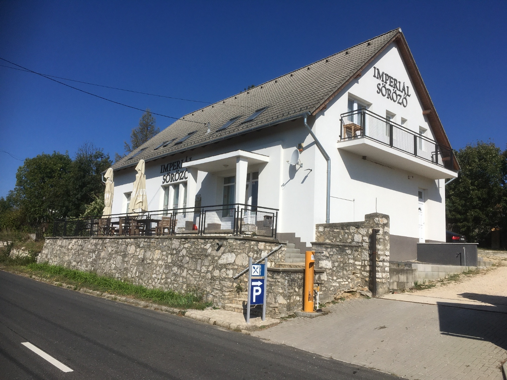
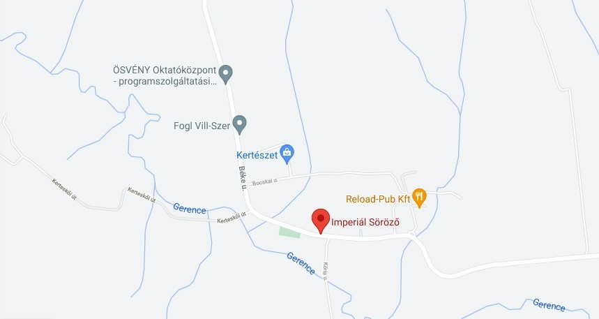

1. szoba
2+2 fős elhelyezés, két személyes ágy és kinyitható ágy.
Alapár: 14000 Ft 2 főig.
A második főtől 6000 ft/fő.
Az Imperiál Vendégház Pénzesgyőrben, egy hangulatos kis bakonyi faluban, Zirc és Bakonybél között félúton található.
Nevét a 20. század legjobb magyar tenyésztésű versenylováról - Imperiálról – kapta, aki utolsó éveit a Pénzesgyőrhöz tartozó Kerteskőn töltötte tenyész ménként.
A szálláshely az emeleten közel 120 m2-en, 5 darab fürdőszobás, teakonyhás szobával és egy nagy, tágas közösségi helységgel rendelkezik, összesen 16 férőhellyel.
Vendégházunkat ajánljuk nagyobb társaságoknak, túrázóknak, kerékpáros csapatoknak. Mindenkinek aki szereti a Bakonyt!

2+2 fős elhelyezés, két személyes ágy és kinyitható ágy.
Alapár: 14000 Ft 2 főig.
A második főtől 6000 ft/fő.
2+2 fős elhelyezés, két személyes ágy és kinyitható ágy.
Alapár: 14000 Ft 2 főig.
A második főtől 6000 ft/fő.
2+2 fős elhelyezés, két személyes ágy és kinyitható ágy.
Alapár: 14000 Ft 2 főig.
A második főtől 6000 ft/fő.
2+1 fős elhelyezés, két személyes ágy és egy külön ágy.
Alapár: 14000 Ft 2 főig.
A második főtől 6000 ft/fő.
1 fős elhelyezés, egyszemélyes ágy.
Alapár: 14000 Ft 2 főig.
A szállásdíj nem tartalmazza az idegenforgalmi adót (350 Ft/ éj/ 18 éven felüli személy)
A szobákhoz tartozó 35 m2-es társalgóban étkezőasztal és kényelmes kanapék biztosítják a vidám közös együttlétet. A hatalmas udvaron pedig az árnyas fák alatt kialakított bográcsozó hely mellett lehet együtt eltölteni az időt, vagy a hátsó udvarban a Kis-Som-hegyben gyönyörködni.
Az egykor sörözőként üzemelő 60 m2 helyiség bérelhető családi rendezvényekre, születésnapokra, céges rendezvényekre, legény- és lánybúcsúkra. A terem egy térré alakítható.
Keressen minket elérhetőségeinken!
Kerteskő „Kerteskuv” neve már a bakonybéli bencés monostor Szent István általi, 1018-as alapító levelében is szerepel. A 300 méter hosszú szurdok a Bakony több millió éves emelkedése, illetve a Gerence-patak és hordalékának koptató hatása révén jött létre. A vadregényes, köves, sziklás patakmedret néhol 40 m magas sziklafal határolja. A partfalak szikláiban megkövült növények és állatok több millió éves lenyomatait fedezhetjük fel. A Kertes-kő vagy az Oltár-kő sziklatömbjei áldozóhelyül szolgáltak a kereszténység felvétele után a Bakony erdeiben rejtőzködő, ősi hithez ragaszkodó pogányoknak. A szurdokot a helyiek Gugyornak is nevezik (jelentése völgy).
továbbNevét a Kerteskői kastély tulajdonosának Rainprecht Antal (Veszprém megye főispánja) Judit nevű lánya után kapta. Az Oltár kő fölött fakadó forrástól kb 50 méterre a szurdok felé található 40-50 m hosszú vízlépcső, a forrás által kialakított, mésztufából álló gátsor, melyen a víz kis zuhatagokkal tarkítva szalad mintegy 40 méteres magasságból a Kerteskői-szurdok mélyébe. Ez a képződmény a felszínre került, felgyorsuló karsztvíz szén-dioxid leadása következtében kicsapódó kalcium-karbonátból, édesvízi mészkőből áll. A forrás környékén a porózusabb mésztufa őrzi a több száz éves levelek lenyomatait, míg a patakmederben és a környező sziklákon az egykor itt hullámzó tenger élővilágának nyomait láthatjuk a kövekben megőrizve: kagylókét, csigákét, növényekét.
továbbTörvényileg védett barlang. Hossza 10 méter mélysége 4 méter Kataszteri szám: 4411-7. Törvényileg védett barlang. Hossza 33 méter mélysége 11 méter Kataszteri szám: 4411-6.
továbbA turriliteszes márga (vagy Pénzeskúti Márga) egy rendhagyó módon, csiga alakban felcsavarodott ammoniteszről, a Turrilites-ről kapta a nevét. A szürkés színű homokos mészmárga az egyik legfosszíliadúsabb kréta időszaki kőzetünk, amelynek elterjedése Csehbányától Oroszlányig ismert. Az egyik legjobb felszíni feltárása Pénzesgyőr határában, a Tilos-erdő területén található. Az ősmaradványokban nagyon gazdag alsó rétegek tömegesen felhalmozódott ammonitesz, csiga, kagyló és tengeri sün fosszíliákat tartalmaznak. Az ammoniteszek egy része különösen szép, mivel a példányok héja is megőrződött, díszítettek. Mint ahogy Pénzesgyőrön sokfelé, itt is szép számmal fellelhető a Szent László pénze, az 50 millió évvel ezelőtt élt óriás egysejtűek, a nummuliteszek megkövesedett maradványa.
továbbAz ásott kutakon kívül Pénzeskút puszta vízellátását ez a forrás biztosította. A Fischer család a forrástól a birtokig vízvezetéket épített ki a gazdaság vízellátásának biztosítására. A régi TSZ épületekbe még ma is folydogál a csapból a Bazent vize.
továbbAz 1898-ban épült vadászkastélyból már csak a kastély alapjai és törmelékek láthatóak. Az erdőben nagyon jól kivehető a korábban ide vezető út, melyen egykoron lovakkal közlekedtek katolikus szentmisére a Fischer Kúriába. A vadászkastély alapjai mögött, a domboldalba bevájt, erős betonfödémmel ellátott, kőtömbökből rakott istálló maradványa látható. Korábban a közelben állt több, száz éves bükk fa, sajnos mára már egy sem maradt.
továbbA gazdaságot 1917-1923 között Fischer Antal majd 1923-1949 között fia Dr. Fischer Lajos vezette. Fischer eredményes gazdálkodásának az 1939-es második zsidótörvény vetett véget, majd 1942-ben a zsidóingatlannak minősített pénzeskúti Fischer-birtokot az Országos Földhitelintézet javára írták át. 1944-ben deportálták, családját Budapesten internálták, de mindnyájan szerencsésen átvészelték a Holocaustot. 1946-ban a kastélyból csupán két szobát, konyhát és kamrát kapott vissza. Fellebbezésére 1947-ben a kastélyt egészen visszajuttatták. 1949-ben a Fischer család a kastélyt eladta az egyháznak. Ebben alakították ki a Szent Márton tiszteletére szentelt templomot. Szent Mártont ábrázoló képet a sekrestyében tartják és csak Szent Márton ünnepén helyezik az oltárra. Az 1950-ben, ismeretlen festő által készített oltárkép a köpenyének felét koldusnak adományozó Szent Mártont ábrázolja.
továbbA kerteskői majorság képítése Rainprecht Antal nevéhez fűződik. Antalháza (ahogy a helyiek a földbirtokos után Kerteskőt nevezték) kiépítése is 1898-ban kezdődhetett, 1904 táján már teljesen kiépített volt. 1908-ban fia, Dr. Rainprecht Antal vette át a birtok irányítását, de 1914-ben közéleti elfoglaltsága miatt bérbeadta a birtokot. 1917, 1918 Veszprém megyei főispán, 1926 után ő szervezte meg a magyarországi Páneurópai Mozgalmat. 1949-ben a Rainprecht család a kerteskői kastélyon kívül minden felépítményt és a legjelentősebb felszerelési tárgyakat is 10 évi haszonbérletre adták át az államnak, amely egy fillért sem fizetett értük, és hamarosan állami tulajdonba került. Az Állami Ménest 1952 végén szervezték meg oly módon, hogy az óbányai telivér kancákat Kerteskőre hozták át. A ménes történetének új korszaka kezdődött akkor, amikor 1962-ben a Bábolnai Állami Gazdaság vette át. Az új korszakot Burgert Róbert neve fémjelezte, aki 1960-tól a szocialista rendszer összeomlásáig állt a vállalat élén. A kastély mai kialakítása is ebből az időszakból származik. Imperiál a 20. század egyik legjobb tenyésztésű magyar versenylova a versenyzés után lekerült a pályáról, és fedezőmén lett a kerteskői telivér ménesben. 1989-ben bekövetkezett halála után szívét Kerteskőn temették el. A kastély magántulajdonban van, nem látogatható.
tovább